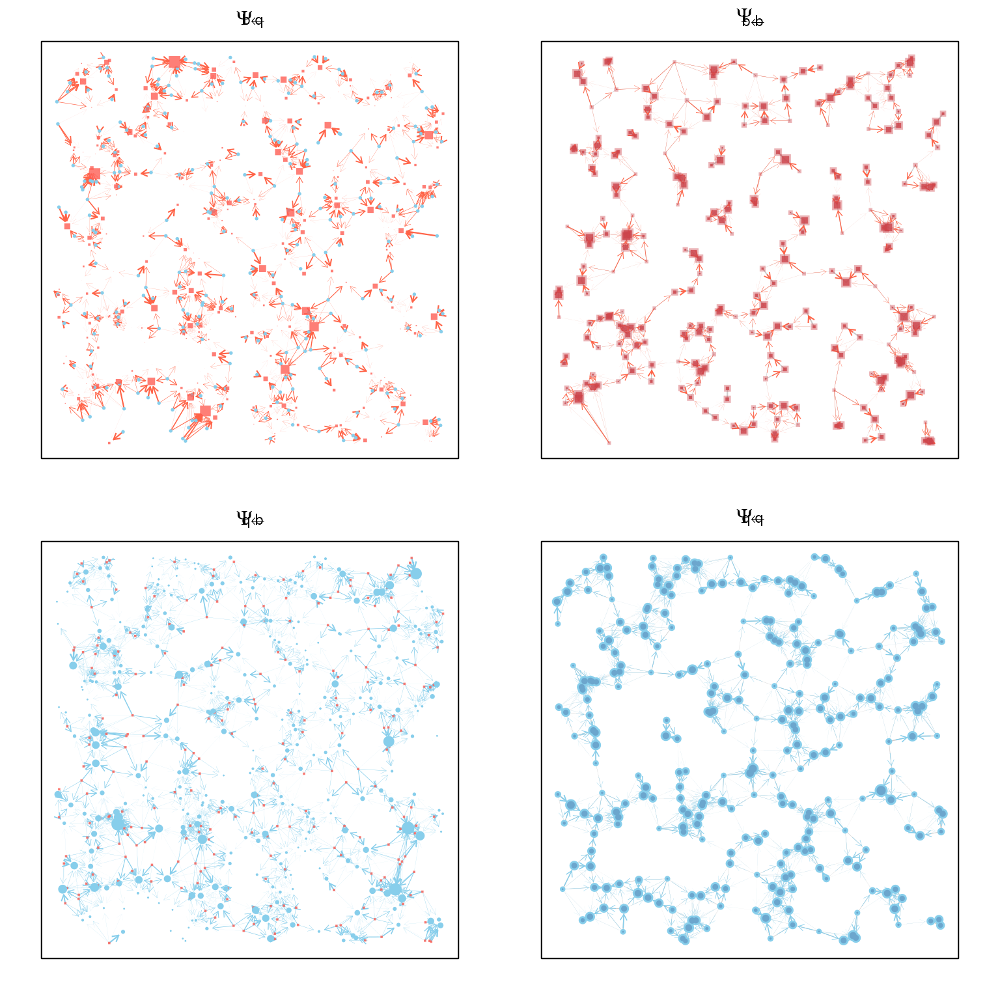

Simulation
simulation.RmdIntroduction
If we want to target vector interventions for malaria spatially, fine-grained spatial simulations can be useful. Fine-grained models can be difficult to formulate and implement, but they make it possible to conduct thought experiments to test ideas about mosquito populations, such as the robustness of metrics we use to measure mosquito populations, spatial targeting, and spatial aspects of vector control coverage and effect sizes.
This software was designed to implement micro-simulation models where mosquitoes move among point sets. To model mosquito movement, we are interested in mosquito searching behavior for resources. Searching for a resource – a blood host, or a habitat – is linked to a behavioral state and the end of searching is at a point in space where the resources exist. The software implements a set of models that combine these two ideas that represent important departures from the standard theoretical approach to malaria (landing page). In the following, we walk through the standard model setup.
![Figure 1: In microsimulation models, mosquitoes move among point sets. Blood feeding on hosts occurs at a fixed set of locations. The figure, modified from Perkins TA, et al. (2013), illustrates some of the key elements: a set of points where mosquitoes feed, {f}, and habitats where they lay eggs {l). Dispersal among those point sets is determined by two matrices, one that describes dispersal to blood feed, F, and another to lay eggs, L. The framework also describes exposure to infection by a human population.](DynamicsOnPoints.png)
Demo
Resource Landscape
To get started, we need to set up a microsimulation landscape, which includes point sets and matrices describing dispersal among those point sets:
par(mar = c(1,1,1,1))
plot_points_bq(bb, qq)
Dispersal
kFb = make_kF_exp(k=2, s=1, gamma=1.5)
kFq = make_kF_exp(k=2, s=2, gamma=2)
dd = seq(0, 5, by = 0.01)
plot(dd, kFb(dd), type = "l", col = "darkred", xlab = "Distance", ylab = "Weight")
lines(dd, kFq(dd), type = "l", col = "darkblue")
Psi_bb = make_Psi_xx(bb, kFb)
Psi_qb = make_Psi_xy(bb, qq, kFq)
Psi_bq = make_Psi_xy(qq, bb, kFb)
Psi_qq = make_Psi_xx(qq, kFq)
par(mfcol = c(2,2), mar = c(1,2,1,2))
plot_Psi_BQmod(bb, qq, Psi_bb, Psi_qb, Psi_bq, Psi_qq)
Setting up a model
To simulate mosquito population dynamics, we need to set up an object
that stores all the information. In R, we set up the model as a list. To
simulate, each model must fully define a set of parameters and initial
values. To streamline the process, we developed a function called
setup_model that accepts some basic arguments and that
returns a fully defined model:
model = setup_model(bb, qq, kFb = kFb, kFq = kFq)
names(model)## [1] "b" "q" "nb" "nq" "Mpar" "Mvars" "terms" "Lpar" "Lvars"
names(model$Mpar)## [1] "setup" "Psi_bb" "Psi_qb" "Psi_bq" "Psi_qq" "pB" "pQ" "psiB"
## [9] "psiQ" "ova" "Mbb" "Mqb" "Mbq" "Mqq" "Mbl" "bigM"
## [17] "eip"
names(model$Lpar)## [1] "pL" "zeta" "theta" "xi"Solving
We can solve the model and produce output by calling the function
SIM
model <- SIM(model)The population densities are highly heterogeneous, even though the habitats and blood feeding sites that are all alike in every way except location. Here, the size of each point scales with the density of the adult, female mosquito population at that point (red = blood feeding, blue = egg laying).